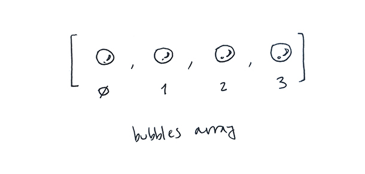

Overview
We start this learning activity by adding a new bubble to our array each time the user clicks. Then we limit the number of bubbles by removing the oldest bubble each time we get to having 50 of them.
Overview
We start this learning activity by adding a new bubble to our array each time the user clicks. Then we limit the number of bubbles by removing the oldest bubble each time we get to having 50 of them.
Instructions
In the last learning activity we created an array that holds four (or more) bubbles.
Now let's add a bubble to it each time the user clicks the mouse. This means adding a mouseClicked function, creating a new bubble, and adding it to the array. Something like this:
function mouseClicked() {
bubbles[4] = new Bubble();
}
Of course the code above only works the first time the user clicks: once there is a bubble in position 4, the next one should be added at position 5, and so on.
In p5 arrays have a length property that keeps track of how many elements it holds. For example, the array above has elements in positions 0, 1, 2, 3 and 4. It holds 5 elements, so its length is 5. The next free position in the array is also 5. No matter how many elements an array holds, the position that comes after the last element of an array is always the same as its length. So to add an extra element at the end of the array, we can do this:
function mouseClicked() {
bubbles[bubbles.length] = new Bubble();
}This works, but there is a more convenient way. The function push adds an element to the end of an array:
function mouseClicked() {
bubbles.push(new Bubble());
}Here is a working example:
Let's go one step further, and create our bubbles at the position where the user clicked the mouse. So far, the constructor function has been assigning random values to the x and y position of every bubble it creates. Now we want to specify the x,y position of the bubbles we create from mouseClicked.
function Bubble() {
this.x = random(0, width);
this.y = random(0, height);
this.display = function() {
stroke(255);
fill(255, 0, 150, 50);
ellipse(this.x, this.y, 24, 24);
}
this.move = function() {
this.x = this.x + random(-1, 1);
this.y = this.y + random(-1, 1);
}
}with these ones, which assign x and y received from the function call to the new object's x and y:
function Bubble(x, y){
this.x = x;
this.y = y;
this.display = function() {
stroke(255);
fill(255, 0, 150, 50);
ellipse(this.x, this.y, 24, 24);
}
this.move = function() {
this.x = this.x + random(-1, 1);
this.y = this.y + random(-1, 1);
}
}Now, instead of saying new Bubble() and letting the constructor pick a position for it, we can say new Bubble(mouseX, mouseY). Try it:
To remove elements from an array, we can use the splice function. It takes two parameters. The second one says how many elements we would like to remove; the first one sets the position of the first one. For example, splice(0, 1) removes 1 element from the array, starting at position 0 (which is to say the first element).
splice(1, 3) removes 3 elements from the array, starting at position 1:
Below, splice is used to remove the first (and 'oldest') bubble from the array once the user has drawn 50 bubbles:
if (bubbles.length > 50) {
bubbles.splice(0, 1);
}Notice that, to make the new feature clearer, we are now adding new bubbles when the user clicks and *drags* the mouse, rather than when she clicks it.